相同初始球局与设备视口。准备摄影机按原稿重新构图，因此前后摄影机参数不同；球、瓶尺寸和物理完全沿用。当前画面及录像使用 Chrome / Apple M4 Pro Metal，并非手机 GPU 验收。背景、球道、球瓶均为实时 Three.js。
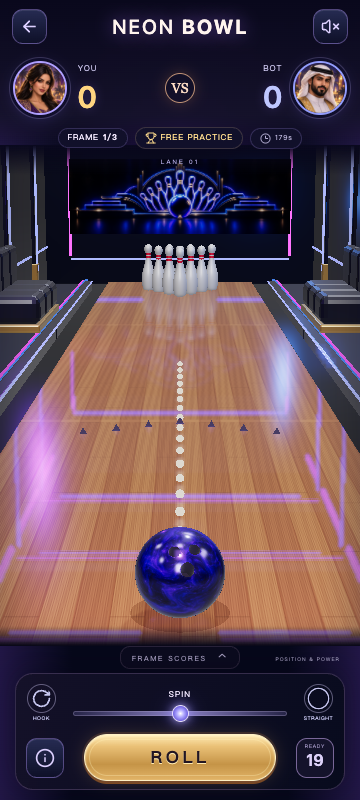
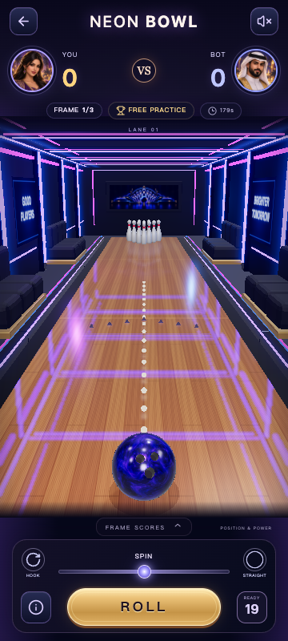
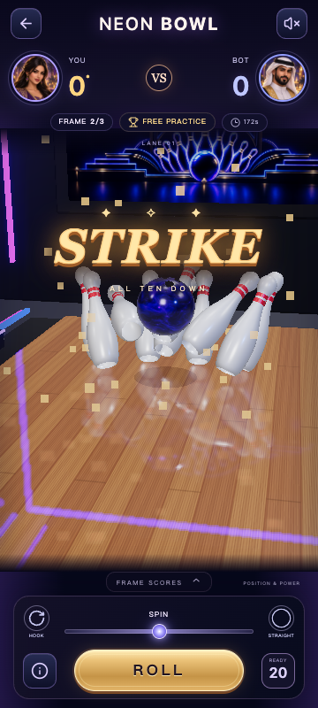
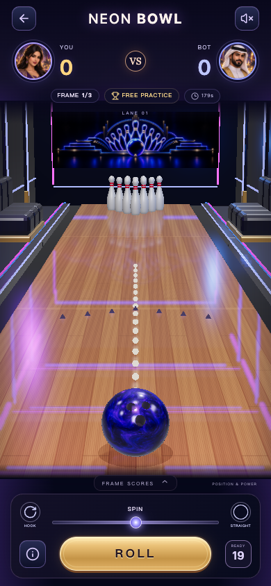
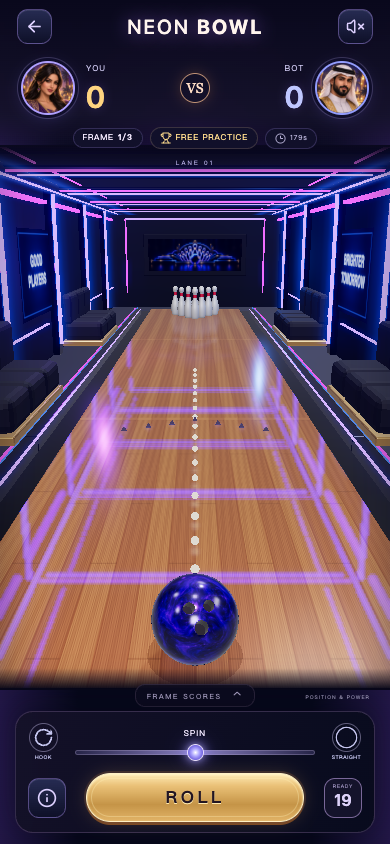
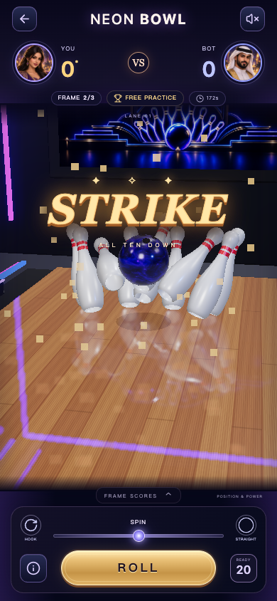
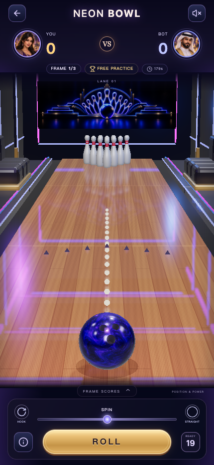
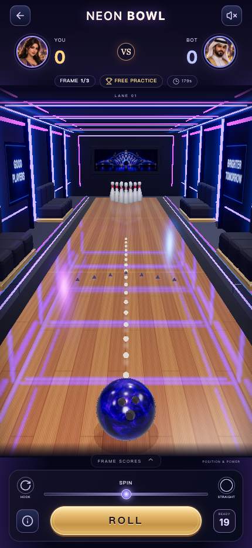
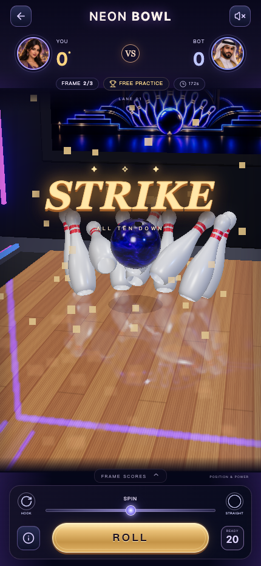
A：场馆重构后、柔光微调前。B：试验较高 bloom，墙面蓝色泛光过强，未采用。E：B 的 1/3 强度，加局部灯槽光晕，最终采用。木地板和暗墙层次保留。
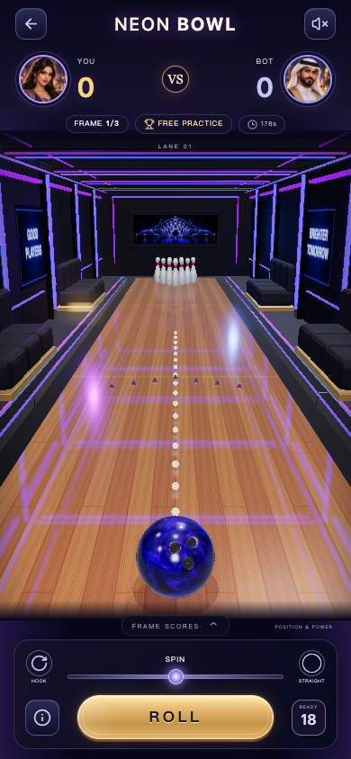
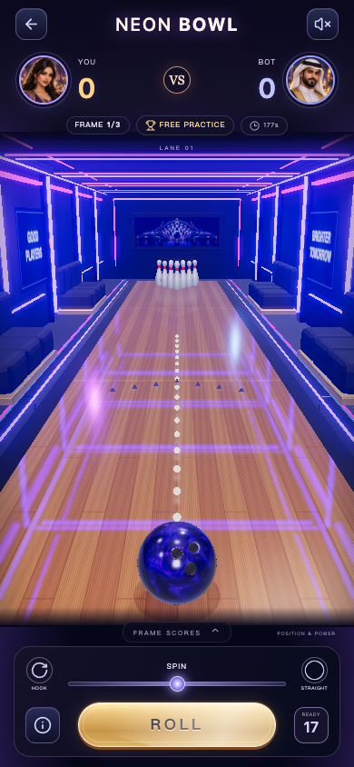